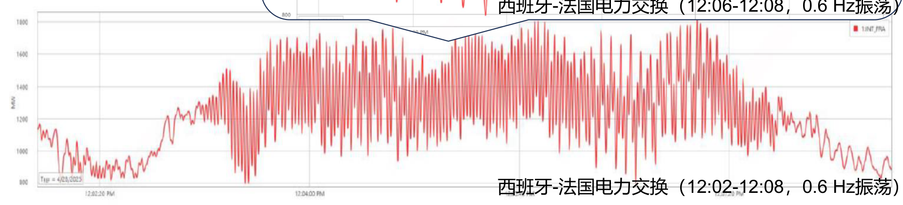
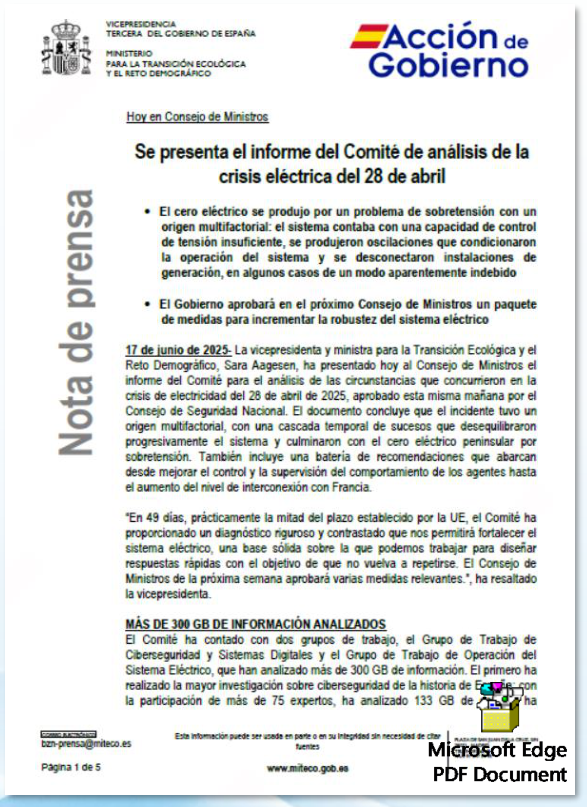

April 28th, 2025 | Iberian Peninsula Grid Collapse In-Depth Analysis
Incident Impact
Affected 35 million people | Economic losses exceeded €20 billion | Duration from hours to 3 days
Incident Affected Areas
Click to zoom
Phase I: System Oscillation Events
12:00 - 12:30
The grid experienced two severe oscillation events: 0.6Hz forced oscillation and 0.2Hz natural oscillation, with dramatic voltage fluctuations. REE control center implemented multiple emergency measures with limited effectiveness.
REE Official Report Overview
Click to zoom
12:00 - 12:03
System voltage and frequency were within normal operating range, with 0.2 Hz inter-area oscillation damping at 20%. System operation was stable.
400kV Transmission Network Voltage (00:00-09:00 on April 28th)
Click to zoom
400kV Transmission Network Voltage (09:30-12:30 on April 28th)
Click to zoom
12:03 - 12:07
0.6Hz Forced Oscillation Outbreak
• Duration: 4 minutes and 42 seconds
• 0.2Hz oscillation damping dropped sharply to 5%
• System-wide average voltage decreased by approximately 30kV (375-410kV)
• Spain-France interconnection power exchange showed synchronous oscillation
REE Emergency Measures
Coupled 400kV lines to reduce system impedance
Reduced exports to France by 800MW, set export plan to 1,500MW
Switched France DC link to constant power mode (1,000MW)
Disconnected parallel reactors to alleviate low voltage
12:16
0.6Hz Oscillation Recurrence
Voltage fluctuations of 380-405kV occurred. Parallel reactors were disconnected again and previous stabilization measures were repeated.
Spain-France Power Exchange (12:06-12:08, 0.6 Hz Oscillation)
Click to zoom
Spain-France Power Exchange (12:02-12:08, 0.6 Hz Oscillation)

Click to zoom
12:19
0.2Hz Natural Oscillation Appearance
• Almaraz station voltage fluctuation up to 28kV (375-412kV)
• Oscillation source: Internal control anomaly at a 250MW photovoltaic plant in Badajoz province
• Oscillation ceased when the plant self-stabilized
12:22 - 12:27
System oscillations subsided, voltage returned to normal upper limit. REE began connecting parallel reactors to suppress overvoltage. Key Data:
• Distributed networks injected approximately 760Mvar reactive power
• Detected approximately 845MW "effective demand" surge
• Planned conventional unit failed to connect on schedule
0.2 Hz Oscillation Initial Moment (0.6 Hz Oscillation Also Observable)
Click to zoom
12:27 - 12:30
Portugal interconnection adjustment completed. System voltage and frequency remained within 375-435kV and normal frequency range, but voltage continued to rise, setting the stage for the next phase crisis.
Phase II: Large-scale Disconnection Events
12:32:57 - 12:33:18
Renewable energy generation units experienced three consecutive large-scale tripping events, with approximately 2000MW capacity disconnected. System voltage rose to 424kV, frequency began to decline, and synchronous relationship collapsed.
12:32:00 - 12:32:57
System Imbalance Intensified
• Exports to France linearly decreased from 1,500MW to 0
• RCW unit scheduling led to reduced reactive absorption
• Additional 434MW abnormal demand reduced exports
• Reactor and scheduling changes caused voltage to rise to 424kV
12:32:57
First Trip - Granada Province
A 355MW/165Mvar generation transformer tripped accidentally, main grid voltage rose to 424kV, further exacerbating the reactive power deficit.
12:33:16 - 12:33:17.368
Second and Third Consecutive Trips Badajoz Province:
• Two large generation facilities (582MW and 145MW) tripped consecutively Segovia Province:
• Three wind farms (23MW) disconnected
• Multiple photovoltaic and wind installations disconnected consecutively Impact: Total approximately 2,000MW RCW capacity lost reactive absorption capability
2,000MW
Disconnected Capacity
424kV
Peak Voltage
3,807MW
Cross-border Import Peak
Critical Consequences
Sequential disconnection of generation facilities caused further voltage rise
System frequency began to decline
Cross-border imports from France peaked at 3,807MW
System synchronous relationship completely collapsed
Phase III: Complete System Collapse
12:33:18 - 12:33:30
Large-scale pumping and load shedding measures were activated, but the system was beyond recovery. Various units tripped consecutively due to frequency decline and overvoltage, 400kV voltage dropped to below 1kV, and the Spanish Peninsula grid completely collapsed.
12:33:19 - 12:33:24
Final Struggle
• Large-scale pumping and load shedding measures activated
• Morocco interconnection cut due to underfrequency protection
• Load shedding caused voltage to continue rising (vicious cycle)
• France AC link disconnected, HVDC maintained 1,000MW export
• Various units tripped consecutively due to frequency decline and overvoltage (including nuclear and CCGT)
12:33:24
Complete System Collapse
System completely lost voltage support, synchronous disconnection occurred, 400kV voltage dropped to below 1kV, marking the complete collapse of the entire Spanish Peninsula grid.
REE Incident Attribution Analysis
Dynamic Voltage Control Failure: Conventional units failed to regulate reactive power according to procedures
RCW Unit Control Issues: 22% of RCW units failed to meet reactive output requirements
Distributed Network Problems: Uncompensated reactive output from distribution networks exacerbated voltage rise
Interconnection Scheduling Impact: Rapid cross-border scheduling changes caused voltage fluctuations
Protection Setting Deviations: Protection action thresholds too low or insufficient time delays
Oscillation Source: Control failure at Badajoz province photovoltaic plant
Core Conclusion: Incident caused by voltage instability, not system inertia issues
Spanish Government Report Analysis

Click to zoom
Recovery Timeline
12:44 First 400kV France-Spain line re-energized 13:04 Morocco-Spain interconnection re-energized Next day 4:00 Spanish transmission grid restoration completed Next day 7:00 Power supply coverage reached 99.95%
Technical Analysis Summary
Key Technical Insights
Grid-Forming Technology Role: Could provide voltage support, suppress oscillations, and offer inertia support during critical moments
Digital Twin Deficiency: Spain's grid simulation relies mainly on electromechanical models, lacking electromagnetic transient analysis
Weak Interconnection: Only ~5% connection with non-Iberian European grid, creating "grid island" vulnerability
Insufficient Energy Storage: Only 60MW battery storage capacity, lacking grid-forming storage systems
System Inertia Deficit: 50% less than Continental Europe, with "significantly poor" frequency stability